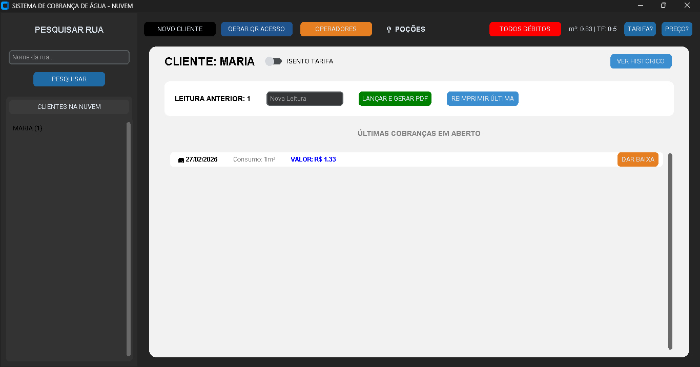
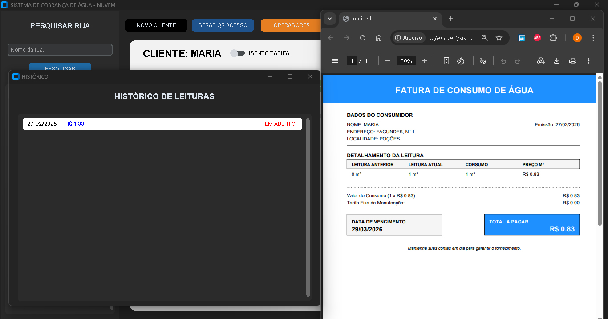
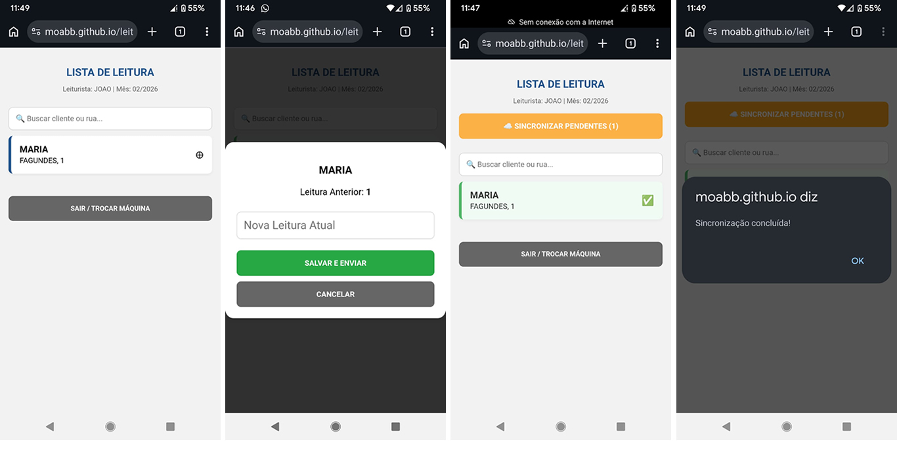
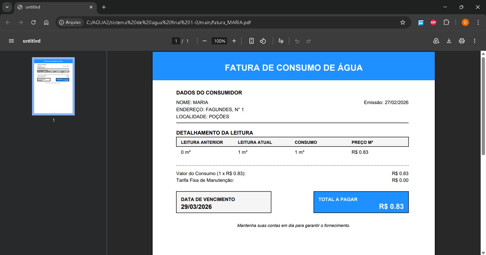

Tecnologia a serviço da sua comunidade.
Gestão de leituristas e geração de faturas em PDF profissionais com um clique.

Controle de clientes e geração de faturas em PDF profissionais com um clique.

O leiturista trabalha mesmo sem internet. Os dados são salvos e sincronizados depois.

Cálculo automático de consumo, tarifa fixa e histórico de leituras anteriores.
